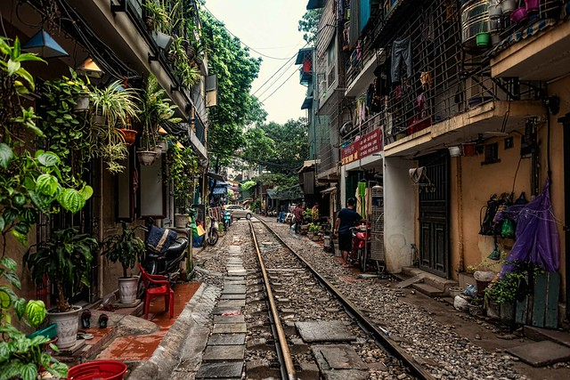
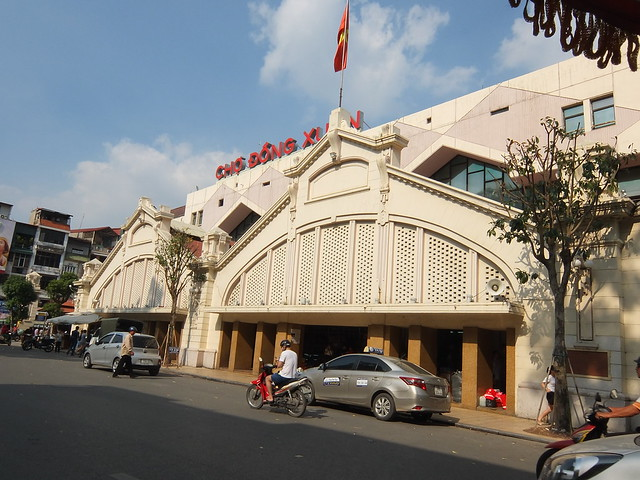

1 journée · Guide francophone privé
Une journée à Hanoi
Visitez Hanoi en 1 jour avec un guide francophone privé : rue du Train, Temple de la Littérature et Vieux Quartier. Départ de votre hôtel à 08h30.
Découvrir le programmeLes voyages avec Jo
Découvrez Hanoi en français avec Jo, votre guide francophone à Hanoi. Choisissez une visite privée d’une journée pour découvrir les monuments et les quartiers, ou une demi-journée à pied dans le Vieux Quartier. Chaque programme précise les horaires, le point de départ, les prestations incluses et les conditions de réservation.

1 journée · Guide francophone privé
Visitez Hanoi en 1 jour avec un guide francophone privé : rue du Train, Temple de la Littérature et Vieux Quartier. Départ de votre hôtel à 08h30.
Découvrir le programme
Une demi-journée · Guide francophone privé
Explorez le Vieux Quartier avec un guide francophone à Hanoi : Đồng Xuân, maison de Mã Mây, dessert et café. Visite privée de 9h à 13h ou de 14h à 18h.
Découvrir le programme